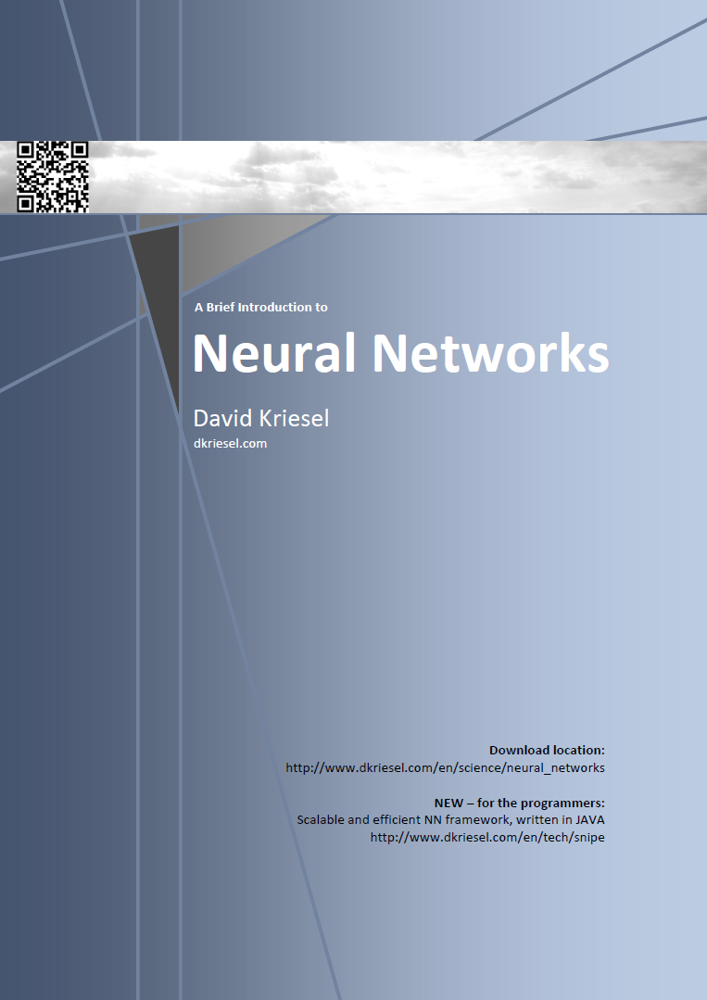

A Brief Introduction to Neural Networks
Artificial Neural Networks
Book Information

A Brief Introduction to Neural Networks
Neural networks are a fundamental concept in artificial intelligence and machine learning, providing a powerful framework for solving complex problems and making predictions based on data.
This book, authored by David Kriesel, offers a comprehensive introduction to the field of neural networks, covering both theoretical foundations and practical applications. It serves as an excellent resource for students, researchers, and practitioners looking to understand the core principles of this rapidly evolving technology.
Key Topics Covered
The book explores several essential aspects of neural networks, including:
- Fundamentals of Neural Networks: Basic concepts, architecture, and components
- Learning Algorithms: Backpropagation and other training methods
- Network Topologies: Different types of neural network structures
- Applications: Real-world use cases in various domains
- Advanced Concepts: Deep learning, convolutional neural networks, and recurrent neural networks
Importance in Modern AI
Neural networks have become increasingly important in the field of artificial intelligence due to their ability to:
- Process large amounts of data
- Recognize complex patterns
- Make accurate predictions in diverse domains
This book provides readers with the necessary knowledge to understand and implement neural networks, paving the way for further exploration and innovation in AI and machine learning.
Extract
From Biology to Formalization
Introduction, Motivation and History
How to teach a computer? You can either write a rigid program – or you can enable the computer to learn on its own. Living beings don’t have any programmer writing a program for developing their skills, which only has to be executed. They learn by themselves – without the initial experience of external knowledge – and thus can solve problems better than any computer today. KaWhat qualities are needed to achieve such a behavior for devices like computers? Can such cognition be adapted from biology? History, development, decline and resurgence of a wide approach to solve problems.
Biological Neural Networks
How do biological systems solve problems? How is a system of neurons working? How can we understand its functionality? What are different quantities of neurons able to do? Where in the nervous system are information processed? A short biological overview of the complexity of simple elements of neural information processing followed by some thoughts about their simplification in order to technically adapt them.
Components of Artificial Neural Networks
Formal definitions and colloquial explanations of the components that realize the technical adaptations of biological neural networks. Initial descriptions of how to combine these components to a neural network.
How to Train a Neural Network?
Approaches and thoughts of how to teach machines. Should neural networks be corrected? Should they only be encouraged? Or should they even learn without any help? Thoughts about what we want to change during the learning procedure and how we will change it, about the measurement of errors and when we have learned enough.
Supervised learning Network Paradigms
The Perceptron
A classic among the neural networks. If we talk about a neural network, then in the majority of cases we speak about a percepton or a variation of it. Perceptrons are multi-layer networks without recurrence and with fixed input and output layers. Description of a perceptron, its limits and extensions that should avoid the limitations. Derivation of learning procedures and discussion about their problems.
Radial Basis Functions
RBF networks approximate functions by stretching and compressing Gaussians and then summing them spatially shifted. Description of their functions and their learning process. Comparison with multi-layer perceptrons.
Recurrent Multi-layer Perceptrons
Some thoughts about networks with internal states. Learning approaches using such networks, overview of their dynamics.
Hopfield Networks
In a magnetic field, each particle applies a force to any other particle so that all particles adjust their movements in the energetically most favorable way. This natural mechanism is copied to adjust noisy inputs in order to match their real models.
Learning Vector Quantisation
Learning vector quantization is a learning procedure with the aim to reproduce the vector training sets divided in predefined classes as good as possible by using a few representative vectors. If this has been managed, vectors which were unkown until then could easily be assigned to one of these classes.
Unsupervised learning Network Paradigms
Self Organizing Feature Maps
A paradigm of unsupervised learning neural networks, which maps an input space by its fixed topology and thus independently looks for simililarities. Function, learning procedure, variations and neural gas.
Adaptive Resonance Theory
An ART network in its original form shall classify binary input vectors, i.e. to assign them to a 1-out-of-n output. Simultaneously, the so far unclassified patterns shall be recognized and assigned to a new class.
Excursi, Appendices and Registers
Cluster Analysis and Regional and Online Learnable Fields
In Grimm’s dictionary the extinct German word “Kluster” is described by “was dicht und dick zusammensitzet (a thick and dense group of sth.)”. In static cluster analysis, the formation of groups within point clouds is explored. Introduction of some procedures, comparison of their advantages and disadvantages. Discussion of an adaptive clustering method based on neural networks. A regional and online learnable field models from a point cloud, possibly with a lot of points, a comparatively small set of neurons being representative for the point cloud.
Neural Networks Used for Prediction
Discussion of an application of neural networks: A look ahead into the future of time series.
Reinforcement Learning
What if there were no training examples but it would nevertheless be possible to evaluate how good we have learned to solve a problem? et us regard a learning paradigm that is situated between supervised and unsupervised learning.